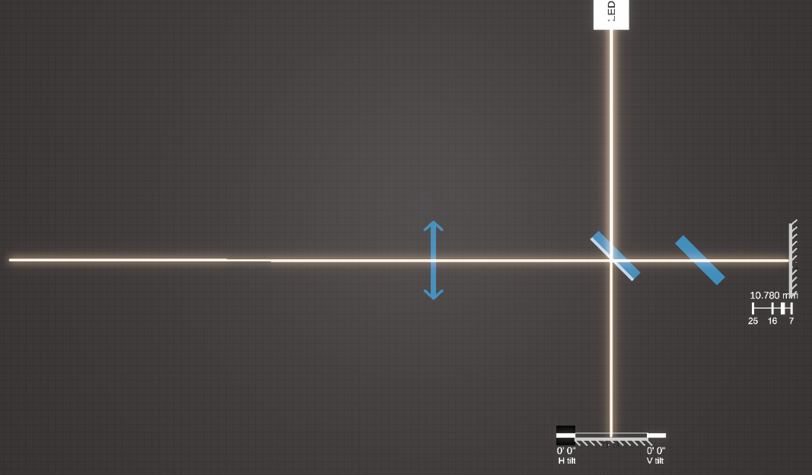
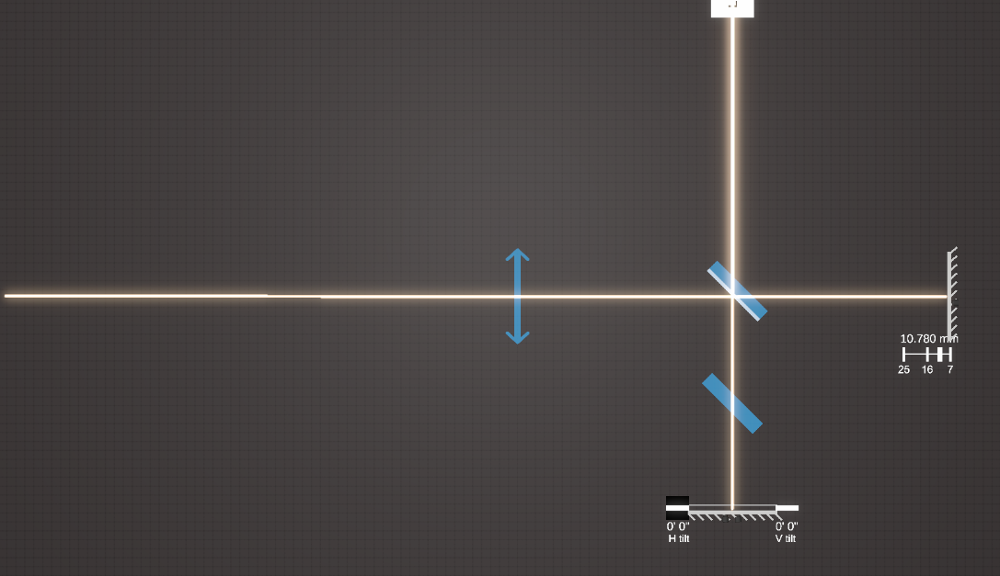
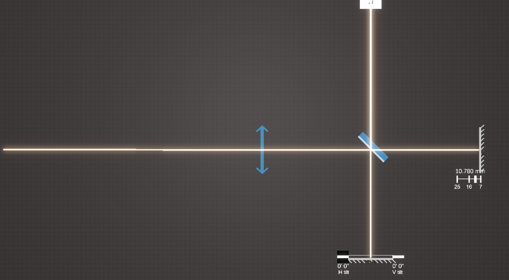

← Back to Home
Exercise 4: Interferomètre de Michelson en lumière blanche
Question 1
Multiple Choice
Quel est le rôle de la lame compensatrice dans un Michelson?
Augmenter la luminosité.
Corriger la différence de trajet optique dans la lame séparatrice.
Empêcher les interférences parasites.
Modifier la polarisation de la lumière.
Question 2
Image Selection
Quelle configuration permet d'obtenir des franges d'interférences avec une lumière blanche ?

Option A

Option B

Option C
<
Question 3
Multiple Choice
En utilisant une source de lumière blanche dans un Michelson, on observe:
Des franges très colorées sur toute la surface.
Des franges uniquement au centre de la figure.
Aucune frange du tout.
Des franges noires et blanches uniformes.
Question 4
Multiple Choice
La lumière blanche contient plusieurs longueurs d’onde. Quelle en est la conséquence dans le Michelson ?
Les franges de chaque couleur ne coïncident pas exactement.
Toutes les couleurs interfèrent de la même manière.
Seule la couleur bleue produit des franges.
Les franges sont uniquement circulaires.
Submit Exercise 4